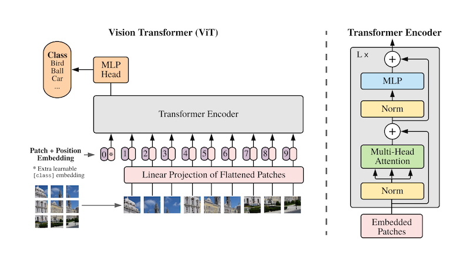

Improvements¶
Motivation¶
In the previous section, the ANN architecture had multiple shortcoming such as the lack of regularization or the abscence of a prominent inductive biases needed to make discriminative predictions. We try to address these concerns in the following.
Description¶
To overcome the limitations of the previous ANN model, we take inspiration from the paper titled AN IMAGE IS WORTH 16X16 WORDS: TRANSFORMERS FOR IMAGE RECOGNITION AT SCALE wherein a self-attention transformer is used to do image classification that attains excellent results compared to state-of-the-art convolutional networks. Some of the improvements over the previous model include,
Learnable 1D positional encodings
Regularization in the form of image patches dropout
Multiple layers of transformer encoder
Let us see how this model performs for our particular task
Architecture (Equation)¶

Implementation¶
import sys
sys.path.append("..")
! pip install einops
import torch
import torch.nn as nn
import torch.nn.functional as F
import torch.optim as optim
import logging
import numpy as np
import pandas as pd
import matplotlib.pyplot as plt
from torch.utils.data import DataLoader
from einops import rearrange # ! pip install einops
from src.dataset import ImageDataset, CLASSES
from src.utils import get_error
# Set default logging level
# Change to logging.INFO to see related output
logging.basicConfig(level=logging.WARN, force=True)
Model definition¶
PATCH_SIZE = 16
NUM_ENCODERS = 6
def generate_positional_encoding(seq_length, dim):
assert dim == 2 * (dim // 2) # check if dim is divisible by 2
pe = torch.zeros(seq_length, dim)
position = torch.arange(0, seq_length, dtype=torch.float).unsqueeze(1)
div_term = torch.exp(
torch.arange(0, dim, 2).float() * (-torch.log(torch.tensor(10000.0)) / dim)
)
pe[:, 0::2] = torch.sin(position * div_term)
pe[:, 1::2] = torch.cos(position * div_term)
return pe
class Transformer_encoder(nn.Module):
def __init__(self, hidden_size, nb_heads):
super(Transformer_encoder, self).__init__()
assert hidden_size == nb_heads * (
hidden_size // nb_heads
)
self.MHA = nn.MultiheadAttention(hidden_size, nb_heads)
self.LLcat = nn.Linear(2 * hidden_size, hidden_size)
self.LL1 = nn.Linear(hidden_size, hidden_size)
self.LL2 = nn.Linear(hidden_size, hidden_size)
self.LN1 = nn.LayerNorm(hidden_size)
self.LN2 = nn.LayerNorm(hidden_size)
def forward(self, g_seq, pos=None):
if pos:
seq_length = g_seq.size(0)
bs = g_seq.size(1)
pos = pos.unsqueeze(dim=1).repeat_interleave(
bs, dim=1
)
logging.info("Pos preprocess: " + str(pos.shape))
h_cat = self.LLcat(
torch.cat((g_seq, pos), dim=2)
)
logging.info("g_seq + pos : " + str(h_cat.shape))
else:
h_cat = g_seq
h_MHA_seq, _ = self.MHA(h_cat, h_cat, h_cat)
logging.info("MHA out : " + str(h_MHA_seq.shape))
h = self.LN1(h_cat + h_MHA_seq)
logging.info("LN1 out : " + str(h.shape))
h_MLP = self.LL2(torch.relu(self.LL1(h)))
h_seq = self.LN2(h + h_MLP)
logging.info("LN2 out : " + str(h_seq.shape))
return h_seq
class ANN(nn.Module):
def __init__(self, hidden_size, nb_heads):
super(ANN, self).__init__()
self.encoders = [
Transformer_encoder(hidden_size, nb_heads) for _ in range(NUM_ENCODERS)
]
self.layers = nn.ModuleList(self.encoders)
def forward(self, img, pos=None):
for layer in self.layers:
img = layer(img, pos)
return img
class attention_net(nn.Module):
def __init__(self, hidden_size, nb_heads, no_classes):
super(attention_net, self).__init__()
self.project_patches = nn.Linear(hidden_size, hidden_size)
self.emb_dropout = nn.Dropout(0)
# This "classification token" will be added to each image and used as a proxy for image encoding
self.cls_token = nn.Parameter(torch.randn(1, 1, hidden_size))
self.pos_emb1D = nn.Parameter(torch.randn(144 + 1, hidden_size))
self.layer2 = ANN(hidden_size, nb_heads)
self.layer3 = nn.Linear(hidden_size, no_classes)
def expand_cls_to_batch(self, batch):
"""
Args:
batch: batch size
Returns: cls token expanded to the batch size
"""
return self.cls_token.expand([batch, -1, -1])
def forward(self, img, pos=None):
bs = img.shape[0]
logging.info("Img: " + str(img.shape))
img_patches = rearrange(
img,
"b c (patch_x x) (patch_y y) -> b (x y) (patch_x patch_y c)",
patch_x=PATCH_SIZE,
patch_y=PATCH_SIZE,
)
logging.info("Img patches: " + str(img_patches.shape))
img_patches = self.project_patches(img_patches)
logging.info("Pos Encoding:" + str(img_patches.shape))
img_patches = torch.cat((self.expand_cls_to_batch(bs), img_patches), dim=1)
logging.info("Class Addition: " + str(img_patches.shape))
patch_embeddings = self.emb_dropout(img_patches + self.pos_emb1D)
logging.info("Dropout: " + str(patch_embeddings.shape))
h_seq = self.layer2(patch_embeddings, pos)
logging.info("Transformer out: " + str(h_seq.shape))
score_seq = self.layer3(h_seq[:, 0, :])
return score_seq
BATCH_SIZE = 1
train_data = ImageDataset(train=True)
valid_data = ImageDataset(train=False)
train_loader = DataLoader(train_data, batch_size=BATCH_SIZE, shuffle=True)
valid_loader = DataLoader(valid_data, batch_size=BATCH_SIZE, shuffle=False)
Number of training images: 2065
Number of test images: 365
### Check if inference works correctly
# nb_heads = 16
# hidden_size = 768
# no_classes = 6
# net = attention_net(hidden_size, nb_heads, no_classes)
# print(net)
# dataiter = iter(train_loader)
# images, labels = dataiter.next().values()
# seq_length = 144
# pos = generate_positional_encoding(BATCH_SIZE, 768)
# scores = net(images.view(BATCH_SIZE, 3, 144, 256))
# scores.shape
# print(scores)
# scores = torch.sigmoid(scores)
# scores
N_EPHOCS = 10
LR = 0.001
PATCH_SIZE = 16
NUM_HEADS = 16
HIDDEN_SIZE = 768
NO_CLASSES = 6
Model instantiation¶
import torch.optim as optim
# Device
device = torch.device("cuda:0" if torch.cuda.is_available() else "cpu")
# Model instance
model = attention_net(HIDDEN_SIZE, NUM_HEADS, NO_CLASSES)
model = model.to(device)
criterion = nn.BCELoss()
optimizer = optim.Adam(model.parameters(), lr=LR)
Train¶
for epoch in range(N_EPHOCS): # loop over the dataset multiple times
train_running_loss = 0.0
train_err = 0.0
model.train()
# TRAINING ROUND
for i, data in enumerate(train_loader):
# zero the parameter gradients
optimizer.zero_grad()
# get the inputs
inputs, labels = data.values()
inputs = inputs.view(BATCH_SIZE, 3, 144, 256)
inputs = inputs.to(device)
labels = labels.to(device)
# Can also use unlearnable positional encoding
# pos = generate_positional_encoding(BATCH_SIZE, 768)
# pos = pos.to(device)
outputs = model(inputs)
outputs = torch.sigmoid(outputs)
loss = criterion(outputs, labels)
loss.backward()
optimizer.step()
train_running_loss += loss.detach().item()
train_err += get_error(outputs.detach(), labels, BATCH_SIZE)
model.eval()
print(
"Epoch: %d | Loss: %.4f | Train Error: %.4f"
% (epoch, train_running_loss / i, train_err / i)
)
Epoch: 0 | Loss: 0.5490 | Train Error: 24.5397
Epoch: 1 | Loss: 0.5228 | Train Error: 23.2881
Epoch: 2 | Loss: 0.5219 | Train Error: 23.3366
Epoch: 3 | Loss: 0.5205 | Train Error: 23.3043
Epoch: 4 | Loss: 0.5187 | Train Error: 23.2800
Epoch: 5 | Loss: 0.5184 | Train Error: 23.2477
Epoch: 6 | Loss: 0.5186 | Train Error: 23.2477
Epoch: 7 | Loss: 0.5176 | Train Error: 23.2477
Epoch: 8 | Loss: 0.5184 | Train Error: 23.2477
Epoch: 9 | Loss: 0.5176 | Train Error: 23.2477
Test¶
test_err = 0.0
for i, data in enumerate(valid_loader, 0):
inputs, labels = data.values()
outputs = model(inputs.view(BATCH_SIZE, 3, 144, 256).to(device))
outputs = torch.sigmoid(outputs)
test_err += get_error(outputs.detach(), labels.to(device), BATCH_SIZE)
print("Validation Error: %.4f" % (test_err / i))
Validation Error: 25.4579
actors = np.array(CLASSES)
print("actors: ", actors)
actors: ['chandler' 'joey' 'monica' 'phoebe' 'rachel' 'ross']
model.eval()
test_running_error = 0.0
output_list = []
target_list = []
for counter, data in enumerate(valid_loader):
image, target = data["image"].to(device), data["label"]
# get all the index positions where value == 1
target_indices = [i for i in range(len(target[0])) if target[0][i] == 1]
outputs = model(image)
outputs = torch.sigmoid(outputs)
outputs = outputs.detach().cpu()
lab = torch.where(outputs >= 0.3, 1, 0)[0]
pred = torch.where(lab == 1)
error = get_error(outputs, target, 1)
output_list.append(outputs.numpy())
target_list.append(target.numpy())
test_running_error += error
string_predicted = ""
string_actual = ""
for i in range(len(pred)):
string_predicted += f"{actors[pred[i]]} "
for i in range(len(target_indices)):
string_actual += f"{actors[target_indices[i]]} "
if 10 < counter < 20:
image = image.squeeze(0)
image = image.detach().cpu().numpy()
image = np.transpose(image, (1, 2, 0))
plt.imshow(image)
plt.axis("off")
plt.title(f"PREDICTED: {string_predicted}\nACTUAL: {string_actual}")
plt.show()
test_error = test_running_error / counter
print(f"Test Error: {test_error} %")
out = np.array(output_list).squeeze(axis=1)
tar = np.array(target_list).squeeze(axis=1)
Test Error: 25.45787606920515 %
Results¶
In training, this model too suffers from the same issues as the previous one except that they are delayed - this model starts overfitting in the 5th epoch (as opposed to the previous model which overfit at 2nd epoch). Training loss and error rates are also comparable between the two.
Test results are exactly the same as the previous except that this model has memorized two classes - “Monica” & “Joey” (as opposed to the previous one of “Monica”). Similar to the previous model, the error percentages are unreliable as the predictions are all the same across test images.
Discussion¶
Despite the improvements to the architecture, the model still suffers from overfitting and the below are the reasons for that behavior
Dataset Size - the paper mentioned above, https://arxiv.org/pdf/2010.11929.pdf, notes that the model gives discouraging results for mid-sized datasets and only starts giving good results when the size of the data is between 14M - 300M images. With the meagre ~3000 images, it is quite reasonable that the model overfits this quick.
As a future improvement, we plan to use pre-trained weights from the vision transformer and fine-tune to for our use-case.